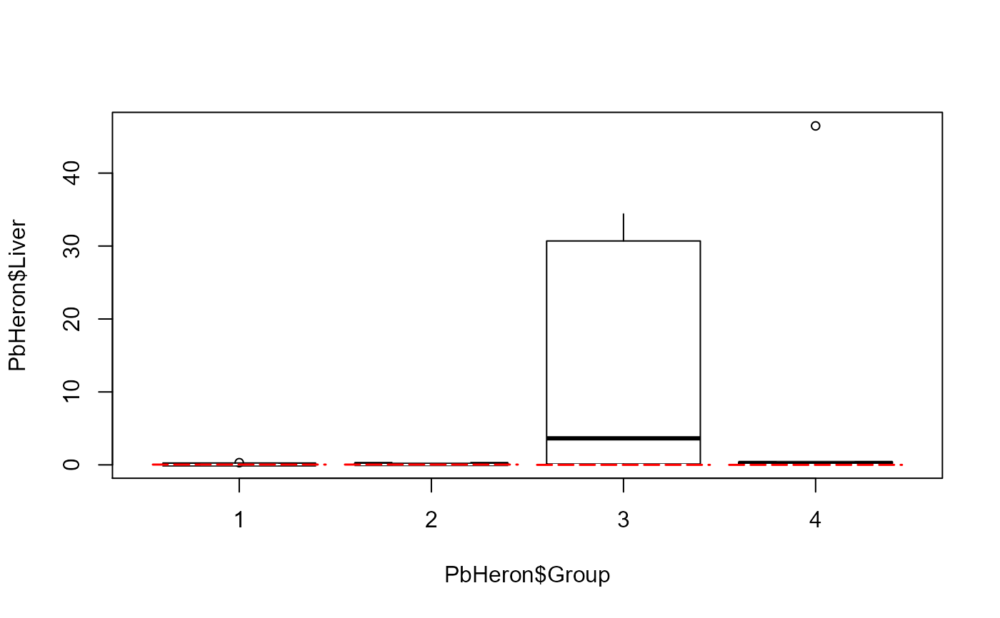

Draws boxplots for left-censored data with one ore more detection limit(s). Portions below the maximum detection limit(s) are not shown by default, as their percentiles are not known.
cboxplot( x1, x2, xgroup = NULL, LOG = FALSE, show = FALSE, ordr = NULL, Ylab = yname, Xlab = gname, Title = NULL, dl.loc = "topright", dl.col = "red", bxcol = "white", Ymax = NULL, minmax = FALSE, printstat = FALSE, Hlines = NULL )
| x1 | The column of x (response variable) values plus detection limits. |
|---|---|
| x2 | The x-variable censoring indicators, where 1 (or |
| xgroup | An optional column of a grouping variable. Draws side-by-side boxplots if this variable is present. |
| LOG |
|
| show |
|
| ordr | A vector indicating the order of boxes to be drawn on the boxplot, if not in alphabetical order (the default). Example: for 4 boxplots for groups A, B, C, D, to change the order to the reverse type ordr = c(4, 3, 2, 1). Example 2: To change the order to A, C, D, B, type ordr = c(1, 3, 4, 2) |
| Ylab | Y axis label text, if something is wanted other than the Y variable name in the dataset. |
| Xlab | X axis label text, if something is wanted other than the group variable name in the dataset. |
| Title | Text to show as the graph title. Default is blank. |
| dl.loc | Location indicator of where to plot the "MaxDL=" text on some versions of the plot. Possible entries are “topleft”, “topright”, “topcenter”, and the corresponding “bottom” text. |
| dl.col | Color of the max detection limit line(s), and the legend text stating the max DL. Default is “red”, but all standard R colors may be used. |
| bxcol | Color for interior of boxplots. Specify just one color if all boxes are to be the same color. If a different color is desired for each of three boxplots, as one example, use bxcol = c(“red”, “white”, “blue”) etc. |
| Ymax | Maximum Y value to be shown on the plot. Used to cut off high outliers on plot and better show the bulk of the boxplots. |
| minmax |
|
| printstat | Logical |
| Hlines | Data to add horizontal reference lines to the boxplot. Required input is a data frame of 4 columns. See Details. |
Prints a boxplot with detection limit identified and a concatenated list of the maximum detection limit for each group.
If maximum detection limits vary among groups, separate maxDL lines will be drawn for each group's boxplot. If one group has fewer than 3 detected observations its boxplot will not be drawn. Its detection limits will not count when computing the maximum limit. However, if only one boxplot is drawn for the entire dataset by not specifying a group variable, the detection limits from the portion that is the mostly ND group will be used when computing the maximum limit.
The reuired input to draw additional horizontal lines (Hlines option) is a data frame with 4 columns of input, one row per horizontal line. More than one line may be drawn. Column one is the Y axis value for the line. Column 2 is the line color, column 3 is the line type (lty) and column 4 is the text to be added just above the line. To add one line at a value of 40, for example, use Hlines = yline, after defining yline = data.frame(c(40, "purple", "dotted", "New Health Std")). To draw two lines, define yline as yline = data.frame(matrix(c(40, "purple", "dotted", "New Health Std", 70, "blue", "longdash", "Old Health Std"), ncol = 4, byrow=TRUE))) . If no text is wanted use " " for the column 4 entry for that line. See ?par under lty for standard line types.
Helsel, D.R., 2011. Statistics for censored environmental data using Minitab and R, 2nd ed. John Wiley & Sons, USA, N.J.
